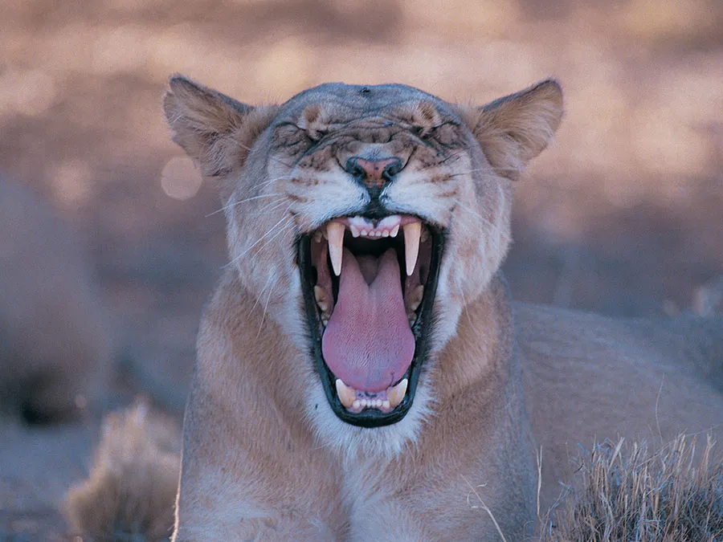

Samoyed
- Related Topics:
- sled dog
- working dog
- spitz
- On the Web:
- WebMD - What to Know About Samoyeds (Dec. 29, 2023)
Samoyed, breed of working dog developed in Siberia, where its ancestors were kept by the Nenets (formerly Samoyed or Yurak) people as a sled dog and companion and as a herding dog for their reindeer. The Samoyed is sturdily built, with erect ears, dark almond-shaped eyes, and a characteristic “smile.” Its long heavy coat is white, cream, biscuit (grayish yellow), or white and biscuit. The Samoyed stands 19 to 23.5 inches (48 to 60 cm) tall at the withers and weighs 35 to 65 pounds (16 to 29.5 kg). The breed was formally recognized by the American Kennel Club in 1906.
Care and upkeep
The Samoyed enjoys daily exercise in the form of a long walk or hike coupled with vigorous games. It loves to run and explore, so it requires a safe area such as a securely fenced yard. The dog also enjoys sledding and other weight-pulling activities, and it can compete successfully in agility, obedience, and nose-work competitions. As a rule, Samoyeds are not eager swimmers.
The breed is conditioned to cold weather, and its thick undercoat can cause overheating in warm climates. The undercoat is subject to severe matting if it is not brushed all the way down to the skin two to three times per week (and as often as daily during shedding seasons, the heaviest of which occurs in the spring). When serious matting does occur, the problem area may need to be professionally shaved from the body. As with other large dog breeds prone to hip dysplasia, Samoyed puppies should eat a large-breed puppy food designed to slow their growth rate, which reduces the chance of developing the disorder.
Temperament
The Samoyed is a playful, adventurous companion for people of all ages. Its energy level is average; that is, it is always up for an outing, but it is equally content to rest calmly at home between adventures. It can be mischievous and destructive of household furnishings. Like other spitz breeds (northern dog breeds characterized by a long dense coat, erect ears, and a tail that curves over the dog’s back), it is independent, easily distracted, and not very obedient. Given reward-based training, however, the Samoyed can learn quickly. It is typically friendly toward new people, other dogs, and other pets, and it is very affectionate toward its family. The Samoyed is an excellent watchdog but a poor protection dog, and, left on its own, it may dig and bark excessively. (Generalizations about the breed are well established and widely accepted, but individual Samoyeds may differ in behaviour from others of their breed.)
Breed data
This table provides a collection of vital statistics and other facts about the Samoyed.
| Samoyed breed facts | |
|---|---|
| other name | Sammy |
| area of origin | Siberia |
| breed group | working |
| height | 19–23.5 inches (48–60 cm) at the withers |
| weight | 35–65 pounds (16–29.5 kg) |
| life span | 12–14 years |
| Did you know? | The Samoyed is among the most ancient breeds of dogs. It bears a close genetic similarity to wolves, and, compared with most other breeds, has not been altered much by selective breeding. The famous “Sammy smile,” which features black lips that curve upward at each corner of the mouth, is a desirable trait that prevents the Samoyed from drooling, especially in subzero temperatures like those of Siberia, where drool would freeze quickly and form icicles around the dog’s mouth and on its thick chest fur. The Samoyed is among the cleanest of breeds, often called the “Teflon dog” because of how easily dirt and mud can be cleaned off its coat. |


.gif)

{kind=link}
{kind=link}
{kind=link}
{kind=link}
{kind=link}